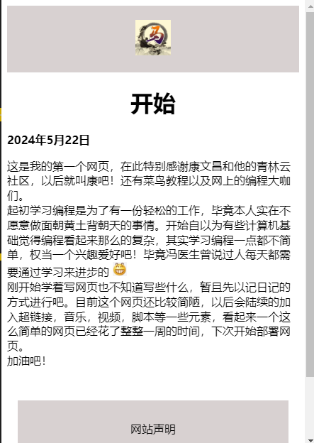

这是我的第一个网页，在此特别感谢康文昌和他的青林云社区，以后就叫康吧！还有菜鸟教程以及网上的编程大咖们。
起初学习编程是为了有一份轻松的工作，毕竟本人实在不愿意做面朝黄土背朝天的事情。开始自以为有些计算机基础觉得编程看起来那么的复杂，其实学习编程一点都不简单，权当一个兴趣爱好吧！毕竟冯医生曾说过人每天都需要通过学习来进步的 
刚开始学着写网页也不知道写些什么，暂且先以记日记的方式进行吧。目前这个网页还比较简陋，以后会陆续的加入超链接，音乐，视频，脚本等一些元素，看起来一个这么简单的网页已经花了整整一周的时间，下次开始部署网页。
加油吧！
